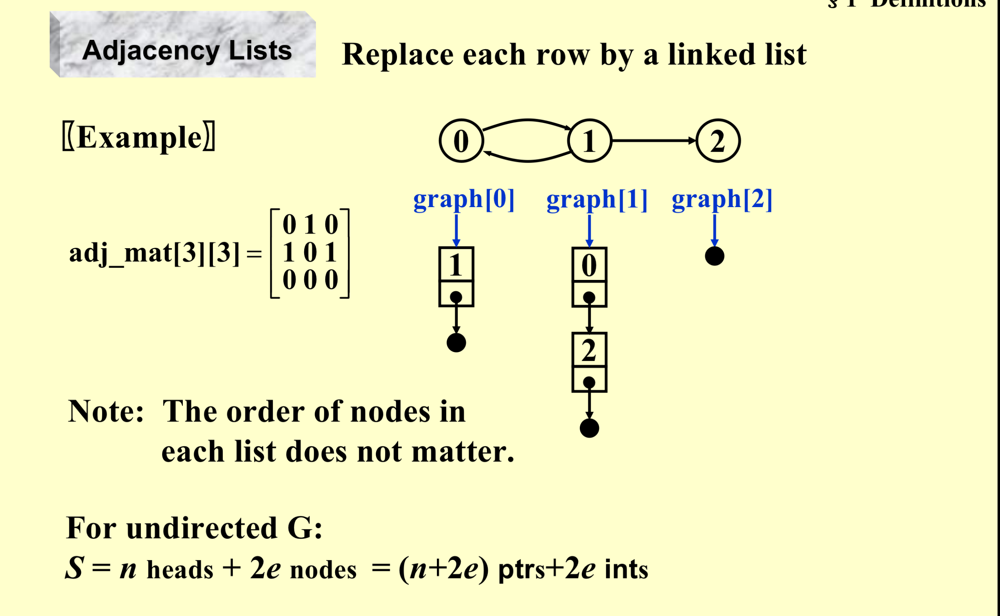
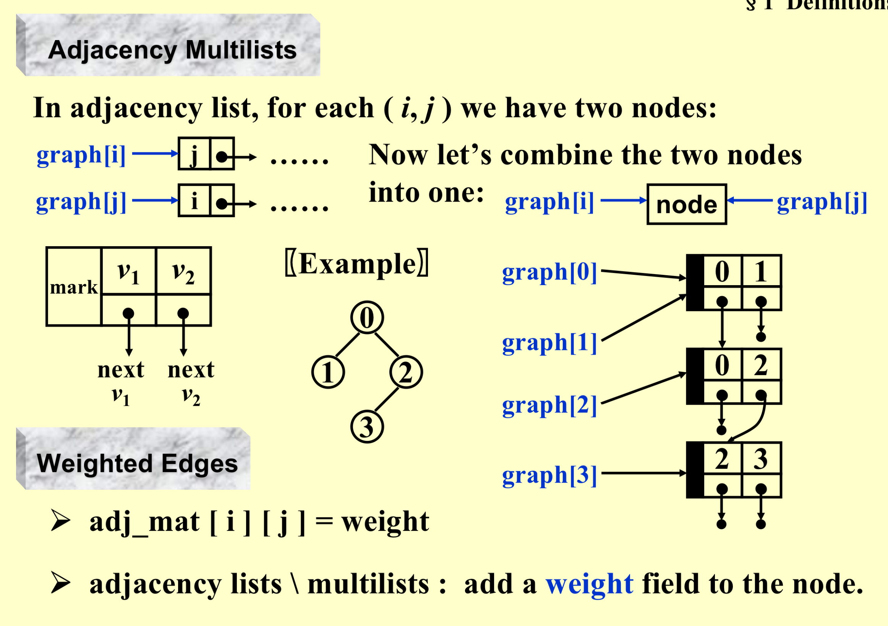
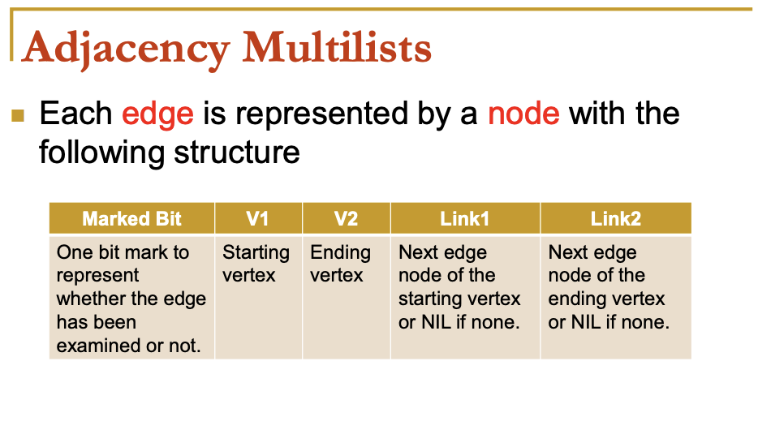
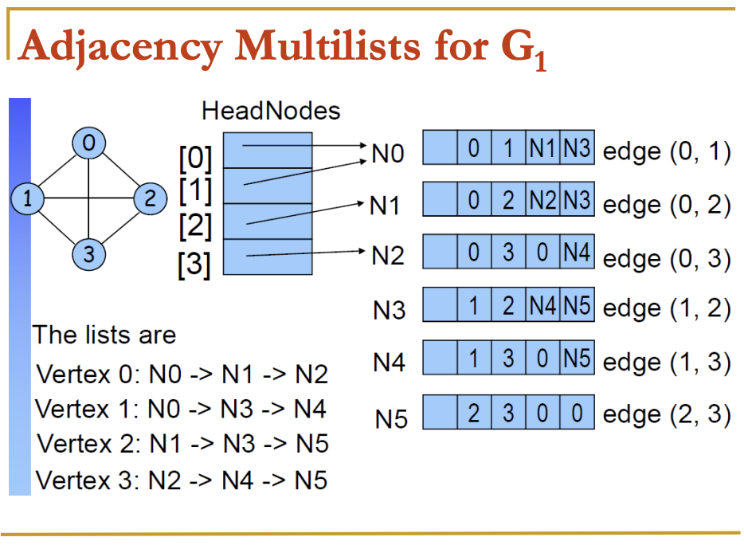
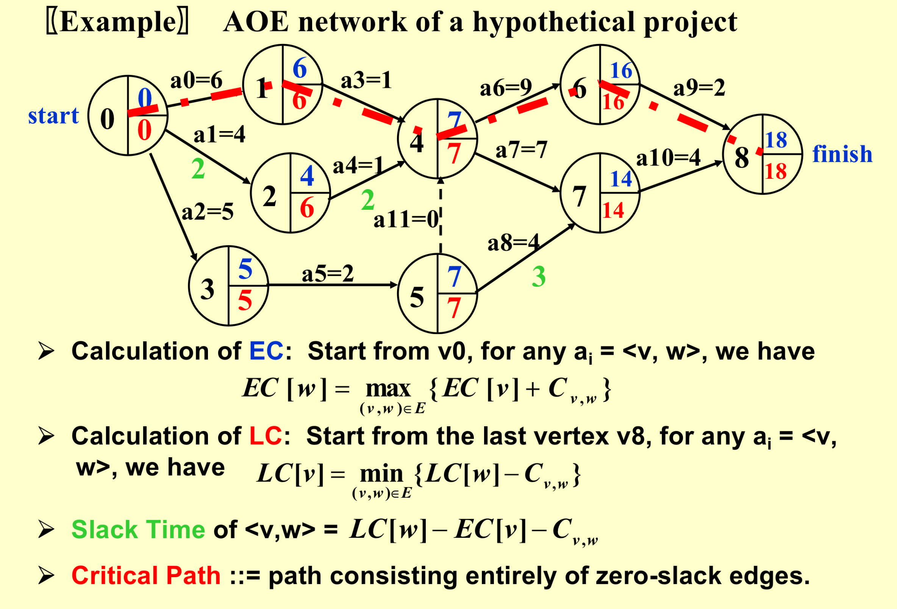
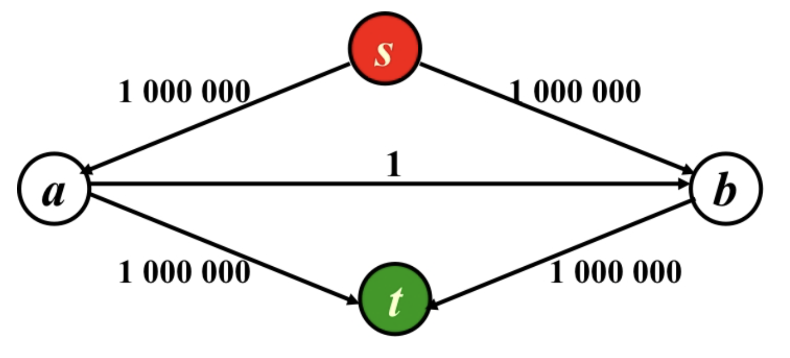
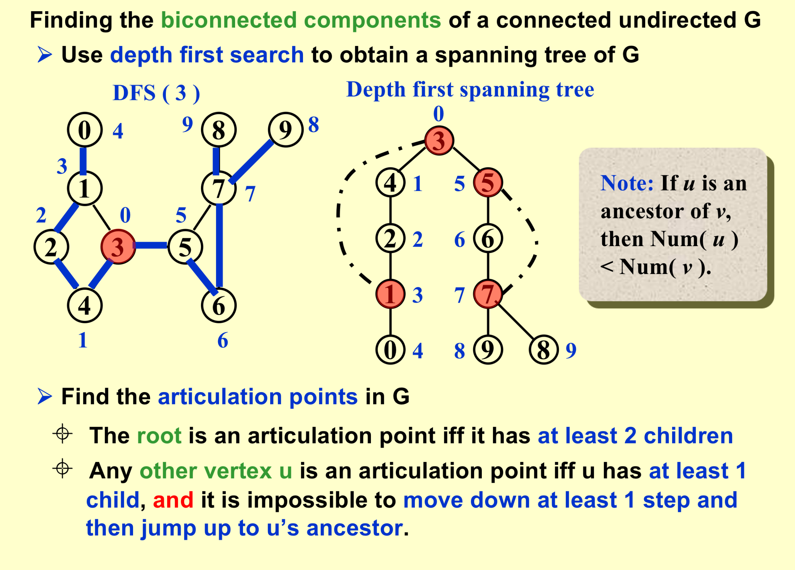

Basic data Structures II
Graphs¶
Some defs¶
- Complete graphs
\(Undirected \ V=n \ \ \ \ E=C_n^2=\frac{n(n-1)}{2}\)
\(Directed \ V=n \ \ \ \ E=2*C_n^2=n(n-1)\)
- Adjacent
\(Undirected \ : (v_i,v_j)\ is \ incident \ on\ v_i\ and\ v_j\)
\(Directed \ : v_i \ is\ adjacent\ to \ v_j \ \ \ \ \ v_j \ is\ adjacent\ from \ v_i\)
-
Subgraph
-
Simple Path
-
Connected
\(Undirected:\) An undirected graph G is connected if every pair of distinct \(v_i\) and \(v_j\) are connected
- A tree = a graph that is connected and acyclic.
\(Directed:\)
Strongly connected directed graph G = for every pair of \(v_i\) and \(v_j\) in V( G ), there exist directed paths from \(v_i\) to \(v_j\) and from \(v_j\) to \(v_i\).
If the graph is connected without direction to the edges, then it is said to be weakly connected
Strongly connected component : the maximal subgraph that is strongly connected
- A DAG = a directed acyclic graph.
- Degree: Number of edges incident to v.
-
For a directed G, we have in-degree and out-degree.
-
\(r=v-e+2\)
Representation of Graphs¶
Adjacency Matrix¶
\(adj_- mat[i][j]=\left\{\begin{array}{l} 1 \ if (v_i,v_j) \ or <v_i,v_j> \in E(G)\\0\ \ otherwise \end{array}\right.\)
If G is undirected the matrix is symmetric,thus sorting only half of the matrix
The trick is to store the matrix as a 1-D array: adj_mat [ $n(n+1)/2 $] = \({ a_{11}, a_{21}, a_{22}, ..., a_{n1}, ..., a_{nn} }\)
The index for \(a_{ij}\) is \(i( i - 1 )/2+j\).
\(\begin{align*}degree(i) &= \sum_{j=0}^{n-1}adj_-mat[i][j] \ (If\ G\ is\ undirected)\\ & \ \ +\sum_{j=0}^{n-1}adj_-mat[j][i]\ (If\ G\ is\ directed)\end{align*}\)
Adjacency Lists¶
- Undirected

Degree( \(i\) ) = number of nodes in graph[ \(i\) ] (if \(G\) is undirected).
T of examine (whether complete) E(G) = O( n + e )
- Directed
A. Add inverse adjacency lists
B.Multilists
Adjacency Multilist¶



- The space taken :\((n+2e)\) ptrs + \(2e\) ints and “mark” is not counted.
- Sometimes we need to mark the edge after examine it,and then find the next edge.This representation makesit easy to do so.
Topological Sort¶
AOV Network¶
Digraph G in which V( G ) represents activities ( e.g. the courses ) and E( G ) represents precedence relations
- i is a predecessor of j \(:\) there is a path from i to j.
- i is an immediate predecessor of j \(:\) \(< i, j >\in E( G )\) then \(j\) is called a successor ( immediate successor ) of i.
- Partial order \(:\) a precedence relation which is both transitive and irreflexive.
If the precedence relation is reflexive, then there must be an i such that i is a predecessor of i.
That is, i must be done before i is started. Therefore if a project is feasible, it must be irreflexive.
- Feasible AOV network must be a dag (directed acyclic graph).
topological order¶
A topological order is a linear ordering of the vertices of a graph such that, for any two vertices, i, j, if i is a predecessor of j in the network then i precedes j in the linear ordering.
-
Test an AOV for feasibility, and generate a topological order if possible.
-
Method One \(T=O(|V|^2)\)
void Topsort( Graph G )
{ int Counter;
Vertex V, W;
for ( Counter = 0; Counter < NumVertex; Counter ++ ) {
V = FindNewVertexOfDegreeZero( );
if ( V == NotAVertex ) {
Error ( “Graph has a cycle” ); break; }
TopNum[ V ] = Counter; /* or output V */
for ( each W adjacent to V )
Indegree[ W ] – – ;
}
}
- Method Two. \(T = O( |V| + |E| )\)
void Topsort( Graph G )
{ Queue Q;
int Counter = 0;
Vertex V, W;
Q = CreateQueue( NumVertex ); MakeEmpty( Q );
for ( each vertex V )
if ( Indegree[ V ] == 0 ) Enqueue( V, Q );
while ( !IsEmpty( Q ) ) {
V = Dequeue( Q );
TopNum[ V ] = ++ Counter; /* assign next */
for ( each W adjacent to V )
if ( – – Indegree[ W ] == 0 ) Enqueue( W, Q );
} /* end-while */
if ( Counter != NumVertex )
Error( “Graph has a cycle” );
DisposeQueue( Q ); /* free memory */
}
Midterm Review¶
Which of the following statements is TRUE about topological sorting? (5分)
- If a graph has a topological sequence, then its adjacency matrix must be triangular.
- If the adjacency matrix is triangular, then the corresponding directed graph must have a unique topological sequence.
- In a DAG, if for any pair of distinct vertices Vi and Vj, there is a path either from Vi to Vj or from Vj to Vi, then the DAG must have a unique topological sequence.
- If Vi precedes Vj in a topological sequence, then there must be a path from Vi to Vj.
3 is true
Shortest Path Problem¶
1.Single-Source Shortest Path Problem¶
- Unweighted Shortest Path
void unweighted(Table T){
int CurrDist;
Vertex V,W;
for(CurrDist=0;CurrDist<NumVertex;CurrDist++){
for(each vertex V){
if(!T[V].Known&&T[V].Dust==CurrDist){
R[V].Known=true;
for(each W adjacent to V){
if(T[W].Dist==infinity){
T[W].Dist=CurrDist+1;
T[E].Path=V;
}
}
}
}
}
}
But the time complexity is \(O(|V|^2)\)
- Note: If V is unknown yet has \(Dist < Infinity\),then Dist is either \(CurrDist\) or \(CurrDist +1\)(Remember Tree?)
Improvement
void unweighted (Table T){
Queue Q;
Vertex V,W;
Q=CreateQueue(NumVertex);MakeEmpty(Q);
Enqueue(S,Q);
while(!isEmpty(Q)){
V=Dequeue(Q);
T[V].known=true;//not really necessary
for(each W adjacent to V){
if(T[W].Dist==Infinity){
T[W].Dist=T[V].Dist+1;
T[W].Path=V;
ENqueue(W,Q)
}
}
}
DisposeQueue(Q);
}
- \(T=O(|V|+|E|)\)
Dijkstra's Algorithm(for weighted shortest paths)¶
void Dijkstra(Table T){
//T is initialized by Figure 9.30 on p 303
Vertex V,W;
for(;;){
V=smallest unknown distance vertex;
if(V==NotAVertex){break;}
T[V].known=true;
for(each W adjacent to V){
if(!T[W].Known){
if(T[V].Dist+Cvw<T[W].Dist){
Decrease(T[W].Dist to T[V].Dist+Cvw);
T[W].Path=V
}
}
}
}
}
- Implementation 1
\(T = O( |V|^2 + |E| )\)
-
Initialization: The initialization phase involves traversing all vertices, setting their distances to infinity, and setting the initial vertex's distance to 0. The time complexity of this step is O(V), where V is the number of vertices.
-
Main Loop: The number of iterations in the main loop depends on the number of vertices. In each iteration, the algorithm selects the smallest unknown distance vertex V and then traverses all vertices W adjacent to V. For each W, it checks if there is a shorter path through V to W, and if so, it updates the distance of W.
The time complexity of this step is \(O(V^2)\), as, for each vertex V, all vertices adjacent to V are considered.
-
Finding the Minimum Distance Vertex: In the main loop, the algorithm needs to find the smallest unknown distance vertex V. The time complexity of this step is O(V^2), as it needs to check the distance of each vertex.
In summary, the time complexity of the Dijkstra algorithm is \(O(V^2)\).
-
Implementation 2
-
V = smallest unknown distance vertex: Keep distances in a priority queue and call DeleteMin – \(O(log|V|)\)
-
Decrease( T[ W ].Dist to T[ V ].Dist + Cvw )
- Method 1: DecreaseKey – \(O(log|V|)\)
\(T = O( |V|log|V|+|E|log|V|)=O(|E|log|V|)\) ----Good if the graph is sparse
- Method 2: insert \(W\) with updated Dist into the priority queue.
Must keep doing DeleteMin until an unknown vertex emerges
\(T = O(|E| log|V| )\) but requires \(|E|\) DeleteMin with \(|E|\) space
Graphs with Negative Edge Costs¶
- Why don’t we simply add a constant to each edge and thus remove negative edges? --Path with different count of PATHS!
void WeightedNegative( Table T )
{ Queue Q;
Vertex V, W;
Q = CreateQueue (NumVertex ); MakeEmpty( Q );
Enqueue( S, Q ); /* Enqueue the source vertex */
while (!IsEmpty(Q)){
V=Dequeue(Q);/* each vertex can dequeue at most |V| times */
for(each W adjacent to V){
if ( T[ V ].Dist + Cvw < T[ W ].Dist ){/* no longer once per edge */
T[ W ].Dist = T[ V ].Dist + Cvw;
T[ W ].Path = V;
if(W is not already in Q){Enqueue(W,Q)}
}/* end-if update */
}
}/* end-while */
DisposeQueue( Q ); /* free memory */
}
Acyclic Graphs¶
If the graph is acyclic, vertices may be selected in topological order since when a vertex is selected, its distance can no longer be lowered without any incoming edges from unknown nodes.
\(T=O(|E| + |V|)\) and no priority queue is needed.
Application: AOE ( Activity On Edge ) Networks —— scheduling a project

All-pairs Shortest path problem¶
Network Flow Problem¶
Ford-Fulkerson Algorithm¶
-
If the edge capabilities are rational numbers, this algorithm always terminate with a maximum flow.
-
The algorithm works for G with cycles as well.
Analysis
1.An augmenting path can be found by an unweighted shortest path algorithm.¶
\(T = O( f\cdot|E| )\) where f is the maximum flow.

2.always choose the augmenting path that allows the largest increase in flow.¶
\(「modify\ Dijkstra’s\ algorithm\ 」\)
\(\begin{align*}T&=T_{argmentation}*T_{find\ a\ path}\\ &=O(E)log(cap_{max})*O(|E|log|V|)\\ &= O( |E|^2log|V|).\end{align*}\) if capmax is a small integer
3.Always choose the augmenting path that has the least number of edges.¶
Simple \(BSF\) Unweighted shortest path algorithm
\(\begin{align*}T&=T_{argmentation}*T_{find\ a\ path}\\ &=O(E)*O(|E||V|)\\ &= O( |E|^2|V|).\end{align*}\)
- If every v \(\notin\) { s, t } has either a single incoming edge of capacity 1 or a single outgoing edge of capacity 1, then time bound is reduced to \(O( |E| |V|^{1/2} )\).
- The min-cost flow problem is to find, among all maximum flows, the one flow of minimum cost provided that each edge has a cost per unit of flow.
Minimum Spanning Tree¶
- A spanning tree of a graph G is a tree which consists of \(V( G )\) and a subset of \(E( G )\)
- The minimum spanning tree is a tree since it is acyclic -- the number of edges is |V| – 1.
- It is minimum for the total cost of edges is minimized.
- It is spanning because it covers every vertex.
- A minimum spanning tree exists iff G is connected.
- Adding a non-tree edge to a spanning tree, we obtain a cycle.
Algorithm¶
(1) we must use only edges within the graph
(2) we must use exactly |V| -1 edges
(3) we may not use edges that would produce a cycle.
1.Prim’s Algorithm – grow a tree¶
2.Krukal’s Algorithm – grow a tree¶
void Kruskal ( Graph G )
{ T = { } ;
while ( T contains less than |V| - 1 edges
&& E is not empty ) {
choose a least cost edge (v, w) from E ; /* Delete Min */
delete (v, w) from E ;
if ( (v, w) does not create a cycle in T ) /Union Find/
add (v, w) to T ;*
else
discard (v, w) ;
}
if ( T contains fewer than |V| - 1 edges )
Error ( “No spanning tree” ) ;
}
Applications of Depth-First Search¶
void DFS ( Vertex V ) /* this is only a template */
{ visited[ V ] = true; /* mark this vertex to avoid cycles */
for ( each W adjacent to V )
if ( !visited[ W ] )
DFS( W );
}
/* T = O( |E| + |V| ) as long as adjacency lists are used */
Biconnectivity¶
- v is an articulation point if G’ = DeleteVertex( G, v ) has at least 2 connected components.
- G is a biconnected graph if G is connected and has no articulation points.
- A biconnected component is a maximal biconnected subgraph.
find the biconected components of a connected undirected graph G¶

Directed case¶
Refert to https://www.baeldung.com/cs/scc-tarjans-algorithm
A directed graph is strongly connected if there is a path between all pairs of vertices. A strongly connected component (SCC) of a directed graph is a maximal strongly connected subgraph.
- DFS search produces a DFS tree/forest
- Strongly Connected Components form subtrees of the DFS tree.
- If we can find the head of such subtrees, we can print/store all the nodes in that subtree (including the head) and that will be one SCC.
-
There is no back edge from one SCC to another (There can be cross edges, but cross edges will not be used while processing the graph).
-
Case1 (Tree Edge): If node v is not visited already, then after the DFS of v is complete, a minimum of low[u] and low[v] will be updated to low[u]. low[u] = min(low[u], low[v])
- Case 2 (Back Edge): When child v is already visited, then a minimum of low[u] and Disc[v] will be updated to low[u]. low[u] = min(low[u], disc[v]);
Euler Circuit¶
- 欧拉回路（Euler circuit）为包含所有边的简单环，欧拉路径（Euler path）为包含所有边的简单路径
- 无向图
- 无向图 G 有欧拉回路当且仅当 G 是连通的且每个顶点的度数都是偶数
- 无向图 G 有欧拉路径当且仅当 G 是连通的且有且仅有两个顶点的度数是奇数
- 有向图
- 有向图 G 有欧拉回路当且仅当 G 是弱连通的且每个顶点的出度等于入度
- 有向图 G 有欧拉路径当且仅当 G 是弱连通的且有且仅有一个顶点的出度比入度大 1，有且仅有一个顶点的入度比出度大 1，其余顶点的出度等于入度
DFS¶
- The path should be maintained as a linked list.
- For each adjacency list, maintain a pointer to the last edge scanned.
- T = \(O( |E| + |V| )\)
#include <iostream>
#include <cstring>
using namespace std;
const int maxn = 1005; // 假设最大节点数为1005
int G[maxn][maxn]; // 邻接矩阵表示图
int deg[maxn]; // 节点的度
int ans[maxn]; // 存储结果的数组
int ansi = 0; // 结果数组的索引
bool visited[maxn]; // 标记节点是否被访问过
void dfs(int x) {
for (int y = 1; y <= maxn; ++y) {
if (G[x][y]) {
G[x][y] = G[y][x] = 0;
dfs(y);
}
}
ans[++ansi] = x;
}
int main() {
// ... 读取输入，初始化 G 和 deg
int cnt = 0, root = 0;
for (int i = 1; i <= maxn; ++i) {
if (deg[i] % 2) {
cnt++;
if (!root) root = i;
}
}
if (!root) {
for (int i = 1; i <= maxn; ++i) {
if (deg[i]) {
root = i; break;
}
}
}
if (cnt && cnt != 2) {
cout << "No Solution\n";
return 0;
}
dfs(root);
// 输出结果
for (int i = ansi; i > 0; --i) {
cout << ans[i] << ' ';}
cout << '\n';
return 0;
}
Hamilton cycle¶
创建日期: 2023年11月15日 16:07:42